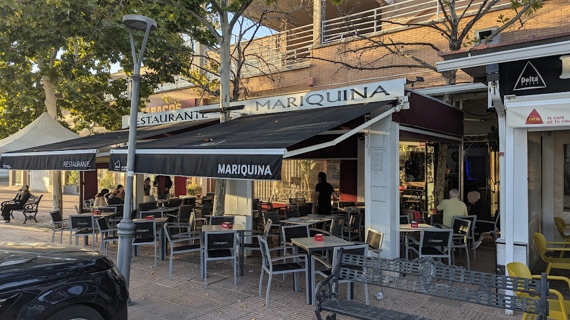

El sabor de la tradición en MariquinA
Cocina tradicional con producto de primera calidad en Badajoz: ibéricos de bellota Maldonado, carnes seleccionadas, pescados frescos y arroces por encargo. Situado en la Avenida de Elvas, junto al Hospital Universitario y el campus de la UEx, con terraza exterior y fácil aparcamiento.

Carta y Especialidades
Producto selecto, ibéricos de bellota Maldonado, pescados frescos, carnes a la plancha y arroces cocinados al momento en Badajoz.
Contacto y Horario
Llámanos por teléfono o escríbenos directamente por WhatsApp para cualquier consulta o reserva.
+34 924 27 60 84
Atención telefónica durante nuestro horario de apertura.
Nuestras Horas de Apertura
- Martes 11:30 – 0:00
- Miércoles 11:30 – 0:00
- Jueves 11:30 – 0:00
- Viernes 11:30 – 0:00
- Sábado 11:30 – 0:00
- Domingo Cerrado por descanso
- Lunes Cerrado por descanso
Nuestra Ubicación en Badajoz
Te esperamos en la Avenida de Elvas 6, Local 22 (Badajoz), en una zona amplia con fácil aparcamiento, a pocos minutos de la Universidad de Extremadura (UEx) y el Hospital Universitario.
MariquinA
Avenida De Elvas 6, LOCAL 22(Junto a la Universidad y Hospital Universitario)
06006 Badajoz (Badajoz)
España
Preguntas Frecuentes
Información práctica sobre reservas, terraza, aparcamiento y nuestra cocina en Badajoz.
¿Es necesario reservar mesa en Restaurante MariquinA?
Es muy recomendable reservar con antelación, especialmente para comidas y cenas en fin de semana, grupos o si deseas degustar nuestros arroces por encargo. Puedes reservar en segundos por WhatsApp (+34 667 60 73 06) o por teléfono (+34 924 27 60 84).
¿Dispone el restaurante de terraza exterior en la Avenida de Elvas?
Sí, contamos con una amplia terraza exterior acondicionada, ideal para disfrutar del clima de Badajoz tanto para el aperitivo y almuerzo como para cenas al aire libre.
¿Cómo funciona el servicio de arroces y paellas por encargo?
Elaboramos arroz de marisco (caldoso o meloso), arroz negro con sepia y paella de marisco con producto fresco y cocinado al momento. Se preparan exclusivamente por encargo para un mínimo de 2 personas con reserva previa.
¿Tenéis menú del día entre semana?
Sí, de martes a viernes a mediodía (no festivos) ofrecemos nuestro menú diario casero con primeros y segundos a elegir, pan, bebida y postre, elaborado con producto de mercado.
¿Es fácil aparcar cerca de MariquinA en Badajoz?
Sí, la zona de la Avenida de Elvas 6 cuenta con amplias avenidas y zonas de aparcamiento público cómodo y gratuito en las inmediaciones del restaurante.
¿Dónde está ubicado exactamente el restaurante?
Estamos en la Avenida De Elvas 6, Local 22 (06006 Badajoz). Una ubicación privilegiada a pocos minutos del Hospital Universitario de Badajoz y el campus de la Universidad de Extremadura (UEx).